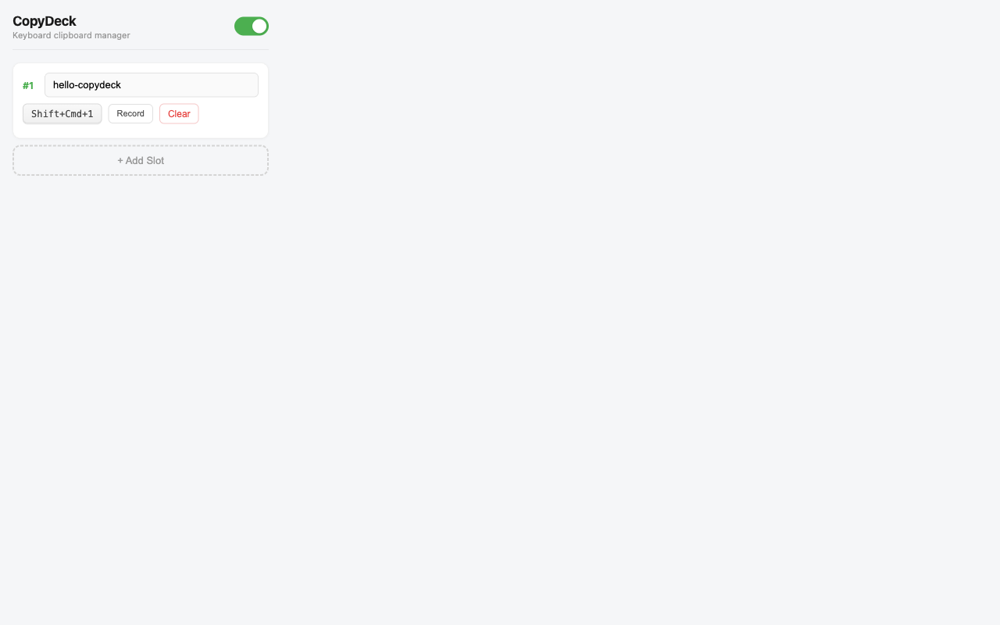
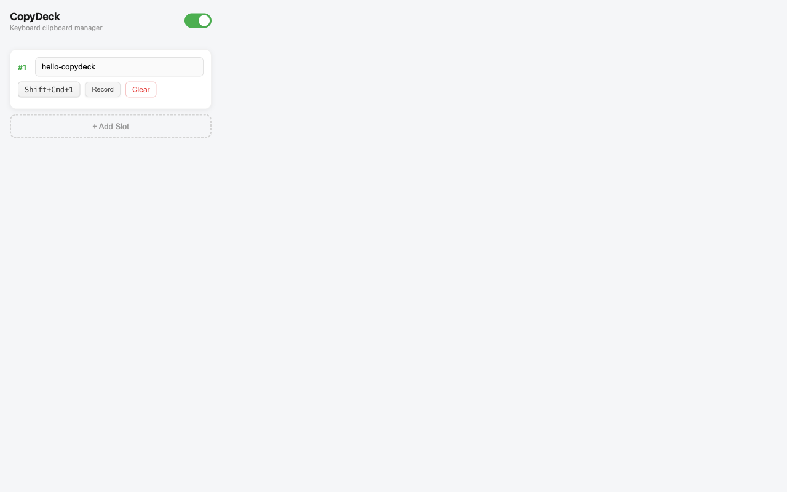
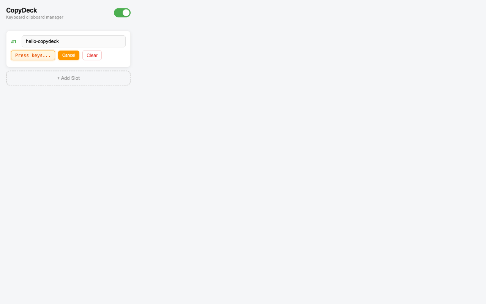
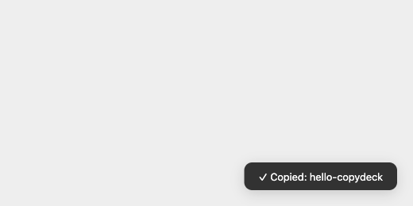
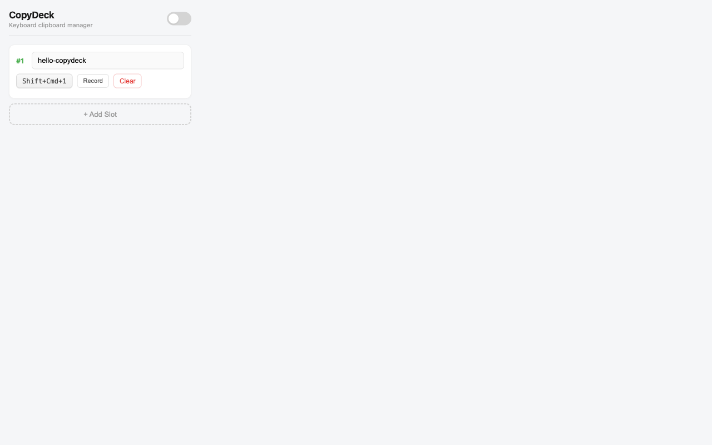

A step-by-step tutorial for building a Chrome extension that binds keyboard shortcuts to text values for instant clipboard copying.
Bind up to 10 custom keyboard shortcuts to text values. Press a combo, copy instantly.
Toast notifications and badge icons confirm every copy action in real time.
Session-only storage clears on browser restart. No data leaves your machine.
CopyDeck has three components that communicate via Chrome's messaging APIs, sharing state through session storage.
{ slots, enabled }
A quick, user-focused walkthrough: install CopyDeck, set a value, trigger a shortcut on any page, and manage slots.
Click the CopyDeck icon. You’ll see your slots (up to 10) and the on/off toggle.

Type the text you want to copy (email, address, snippet, etc.) into the slot input.

Click Record, then press your desired key combo (must include Ctrl, Alt, or Cmd). Duplicate shortcuts are blocked.

Go to any website and press your shortcut. CopyDeck copies the slot value to your clipboard and shows a toast.

Use the toggle in the popup header to disable all shortcuts instantly (the icon also switches to a disabled style).

Screenshots in this section were generated with Playwright.
Terminalnpx playwright test docs/generate-tutorial-screenshots.spec.jsCreate the folder structure and the manifest file that tells Chrome about your extension.
Terminalmkdir -p copydeck/popup copydeck/icons
cd copydeckProject Layoutcopydeck/
├── manifest.json # Extension config
├── background.js # Service worker
├── content.js # Injected into pages
├── popup/
│ ├── popup.html # Popup UI
│ ├── popup.css # Popup styles
│ └── popup.js # Popup logic
└── icons/ # 16/48/128px iconsmanifest.json{
"manifest_version": 3,
"name": "CopyDeck",
"version": "1.0.0",
"description": "Bind keyboard shortcuts to text values for quick clipboard copying",
"permissions": ["clipboardWrite", "storage", "activeTab"],
"action": {
"default_popup": "popup/popup.html",
"default_icon": {
"16": "icons/icon16.png",
"48": "icons/icon48.png",
"128": "icons/icon128.png"
}
},
"background": { "service_worker": "background.js" },
"content_scripts": [{
"matches": ["<all_urls>"],
"js": ["content.js"],
"run_at": "document_start"
}]
}| Field | Purpose |
|---|---|
manifest_version: 3 |
Required for new Chrome extensions (MV2 is deprecated) |
clipboardWrite |
Permission to write to the user's clipboard |
storage |
Access to chrome.storage.session for ephemeral data |
run_at: "document_start" |
Inject content script early so keyboard listeners are ready |
The background script initializes storage, routes messages between popup and content scripts, and manages the extension badge.
chrome.storage.session is invisible to content scripts by default. You must
call setAccessLevel() to open it up — without this, content scripts
silently get empty data.
background.js// Open session storage to content scripts
chrome.storage.session.setAccessLevel({
accessLevel: 'TRUSTED_AND_UNTRUSTED_CONTEXTS',
});
// Initialize default slot on startup
const DEFAULT_SLOT = {
id: 1, value: '',
keybinding: {
ctrlKey: false, shiftKey: true,
altKey: false, metaKey: true,
code: 'Digit1', display: 'Cmd+Shift+1',
},
};
chrome.storage.session.get(['slots'], (result) => {
if (!result.slots || result.slots.length === 0) {
chrome.storage.session.set({ slots: [DEFAULT_SLOT], enabled: true });
}
});background.js — message handlerchrome.runtime.onMessage.addListener((msg, sender, sendResponse) => {
if (msg.type === 'copied') {
// Flash a green checkmark badge
chrome.action.setBadgeText({ text: '✓' });
chrome.action.setBadgeBackgroundColor({ color: '#4CAF50' });
setTimeout(() => chrome.action.setBadgeText({ text: '' }), 1500);
}
if (msg.type === 'toggleEnabled') {
chrome.action.setIcon({
path: msg.enabled ? ICON_NORMAL : ICON_DISABLED,
});
}
if (msg.type === 'getState') {
chrome.storage.session.get(['slots', 'enabled'], (result) => {
sendResponse({ slots: result.slots || [], enabled: result.enabled !== false });
});
return true; // Keep channel open for async response
}
});return true inside onMessage tells Chrome to keep the message
channel open for an async sendResponse. Without it, the port closes
immediately and the response is lost.
background.js — broadcast changeschrome.storage.session.onChanged.addListener(() => {
chrome.storage.session.get(['slots', 'enabled'], (result) => {
chrome.tabs.query({}, (tabs) => {
const msg = {
type: 'stateUpdated',
slots: result.slots || [],
enabled: result.enabled !== false,
};
for (const tab of tabs) {
chrome.tabs.sendMessage(tab.id, msg).catch(() => {});
}
});
});
});The content script is injected into every webpage. It listens for keyboard shortcuts, copies to clipboard, and shows toast notifications.
e.key = "!" (Shift transforms the
character), but e.code = "Digit1" always returns the physical key. Using
e.code makes matching reliable across platforms.
content.js — cross-platform matchingfunction matchesKeybinding(e, kb) {
if (!kb) return false;
// Treat Ctrl and Cmd as equivalent
const eMainMod = e.ctrlKey || e.metaKey;
const kbMainMod = kb.ctrlKey || kb.metaKey;
return (
eMainMod === kbMainMod &&
e.shiftKey === kb.shiftKey &&
e.altKey === kb.altKey &&
e.code === kb.code
);
}content.js — keyboard listenerdocument.addEventListener(
'keydown',
(e) => {
if (!enabled) return;
for (const slot of slots) {
if (matchesKeybinding(e, slot.keybinding) && slot.value) {
e.preventDefault();
e.stopPropagation();
copyToClipboard(slot.value).then(() => {
showToast(slot.value);
chrome.runtime.sendMessage({ type: 'copied' });
});
return;
}
}
},
true, // capture phase — fires before page handlers
);true puts the listener in the
capture phase, which fires top-down before the page's own handlers. This
lets CopyDeck intercept shortcuts before the page can consume them.
content.js — clipboard helpersfunction copyToClipboard(text) {
if (navigator.clipboard && navigator.clipboard.writeText) {
return navigator.clipboard.writeText(text)
.catch(() => fallbackCopy(text));
}
return fallbackCopy(text);
}
function fallbackCopy(text) {
return new Promise((resolve) => {
const textarea = document.createElement('textarea');
textarea.value = text;
textarea.style.position = 'fixed';
textarea.style.opacity = '0';
document.body.appendChild(textarea);
textarea.select();
document.execCommand('copy');
textarea.remove();
resolve();
});
}The popup is the control panel users see when clicking the extension icon. It uses vanilla HTML, CSS, and JavaScript with event delegation.
popup/popup.html<div class="header">
<div class="header-info">
<h1>CopyDeck</h1>
<div class="subtitle">Keyboard clipboard manager</div>
</div>
<label class="toggle">
<input type="checkbox" id="enableToggle" checked />
<span class="slider"></span>
</label>
</div>
<div id="slotList"></div>
<button id="addSlot" class="add-btn">+ Add Slot</button>Instead of attaching listeners to each dynamically-created slot, one listener on the parent handles all events:
popup/popup.js — delegated events// Text input changes — save immediately
slotList.addEventListener('input', (e) => {
if (e.target.matches('input[type="text"]')) {
const id = Number(e.target.dataset.id);
const slot = slots.find((s) => s.id === id);
if (slot) {
slot.value = e.target.value;
saveSlots();
}
}
});
// Button clicks — record or clear
slotList.addEventListener('click', (e) => {
const btn = e.target.closest('button');
if (!btn) return;
const action = btn.dataset.action;
const id = Number(btn.dataset.id);
// ... handle record / clear
});popup/popup.js — recording modedocument.addEventListener('keydown', (e) => {
if (recordingSlotId === null) return;
e.preventDefault();
// Ignore lone modifier keys
if (['Control', 'Shift', 'Alt', 'Meta'].includes(e.key)) return;
// Must include at least one primary modifier
if (!e.ctrlKey && !e.altKey && !e.metaKey) {
showError(recordingSlotId, 'Shortcut must include Ctrl, Alt, or Cmd');
return;
}
const kb = {
ctrlKey: e.ctrlKey, shiftKey: e.shiftKey,
altKey: e.altKey, metaKey: e.metaKey,
code: e.code, display: keybindingToString(kb),
};
if (isDuplicateKeybinding(kb, recordingSlotId)) {
showError(recordingSlotId, `"${kb.display}" is already in use`);
return;
}
slot.keybinding = kb;
saveSlots();
recordingSlotId = null;
renderSlots();
});Load your extension in Chrome and verify everything works.
Terminalnpm init -y
npm install playwright @playwright/test
npx playwright install chromiumtest-extension.spec.jsconst { test, expect, chromium } = require('@playwright/test');
const path = require('path');
test('CopyDeck copies value to clipboard', async () => {
const context = await chromium.launchPersistentContext('', {
headless: false,
args: [
`--disable-extensions-except=${path.resolve(__dirname)}`,
`--load-extension=${path.resolve(__dirname)}`,
],
});
const sw = context.serviceWorkers()[0]
|| (await context.waitForEvent('serviceworker'));
const extId = sw.url().split('/')[2];
// Set a value via popup
const popup = await context.newPage();
await popup.goto(`chrome-extension://${extId}/popup/popup.html`);
await popup.fill('input[type="text"]', 'test-value');
// Test on a real page
const page = await context.newPage();
await page.goto('https://example.com');
await page.keyboard.down('Control');
await page.keyboard.down('Shift');
await page.keyboard.press('Digit1');
await page.keyboard.up('Shift');
await page.keyboard.up('Control');
const clipboard = await page.evaluate(
() => navigator.clipboard.readText()
);
expect(clipboard).toBe('test-value');
await context.close();
});Lessons learned from building CopyDeck that will save you debugging time.
| Problem | Cause | Fix |
|---|---|---|
| Content script gets empty storage | chrome.storage.session is restricted by default |
Call setAccessLevel() in background.js |
| Shift+1 records as "!" | e.key changes with modifiers |
Use e.code (physical key position) |
| Old content script after reload | Existing tabs keep the old script | Open new tabs or refresh after reloading |
| Clipboard API fails silently | Some pages block navigator.clipboard |
Fallback to document.execCommand('copy') |
sendResponse never arrives |
Message port closes after sync return | return true in onMessage |
Key APIs and patterns used in CopyDeck.
| Concept | Where | Purpose |
|---|---|---|
| Manifest V3 | manifest.json | Extension configuration |
| Service Worker | background.js | Background processing (replaces MV2 background pages) |
| Content Scripts | content.js | Code injected into web pages |
chrome.storage.session |
All files | Ephemeral storage (cleared on restart) |
chrome.runtime.sendMessage |
Content ↔ Background | Cross-context communication |
chrome.tabs.sendMessage |
Background → Content | Push updates to all tabs |
| Event Delegation | popup.js | Efficient DOM event handling for dynamic elements |
| Capture Phase | content.js | Intercept keys before page handlers |
e.code vs e.key |
All keybinding code | Cross-platform physical key matching |